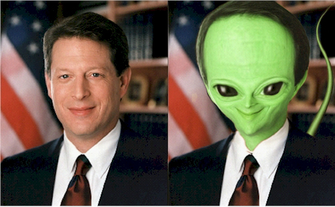
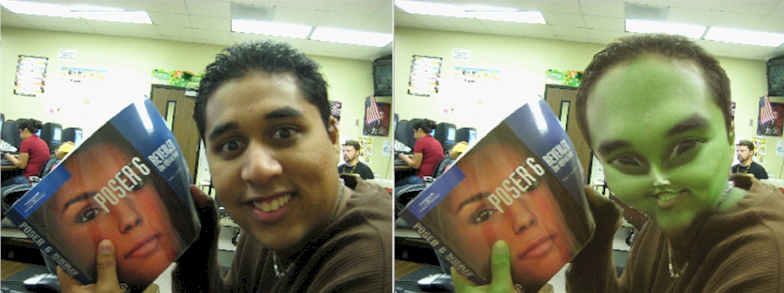
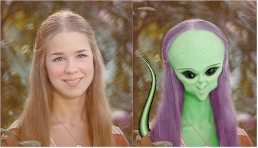
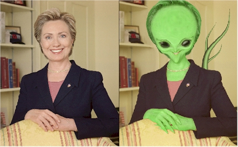
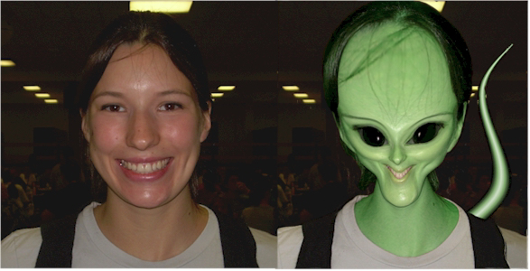
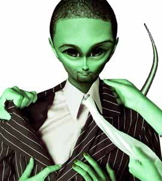
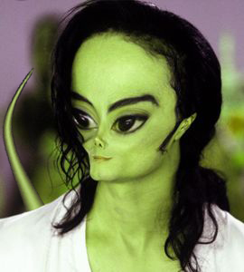
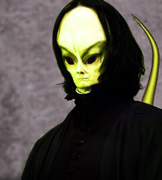
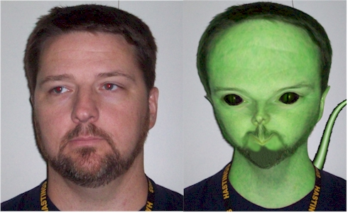

Aliens don't have to be green
| Step 1: Alien Project |
Step 1: Alien | Step 2: Head
| Step 3: Green Skin |
For this Photopea project, we will be going beyond the basic tools and using some new, interesting, useful, and very powerful Photopea tools. We are going to turn a normal photo of you into a freaky photo of an alien. We will be working with a headshot (selfie) of you as the main image with the goal of getting some practice using a quick mask and learning how to use the Liquify filter, which is very cool. When you have completed this assignment, you should have an awesome alien head. Smile - this is fun.
A word of caution: This project assumes that you have experience with Photopea, so this short lesson should only take you two or three days to complete. Note that these directions will not cover every single step and tell you how to do every single thing, though it will discuss some tools and techniques in detail. If these instructions refer to something but do not discuss it in depth and you do not understand, it is your responsibility to look further at the issue to figure it out. Take pride in your work and attempt to solve your own problems - you will enjoy this process much more if you are doing the work yourself.
This project is easiest when the headshot picture you are using is pretty straight on, but just about any picture will work. Also, the more simple the background the better. This process tends to create curves and distortions in the background that have to be corrected for our image to look realistic, so again the more simple the background the better.
Let's adjust your image so that everyone's image is the same size (this will make the instructions applicable to everyone).
Here is the image I will be using for these directions...
Please don't make any political assumptions here - I'm only using this image because he was President when I wrote the first version of these instructions.
At this point, our file is set up and ready to go. In Step 2 we will reshape your head into something a little more alien-like. In the steps that follow, we will turn you green, give you some alien eyes, and even add in a tail.
Right about now you are probably wondering just what you will eventually look like. Below are some example aliens for you to check out...





Aliens don't have to be green


And the best one...

OK, enough goofing around. Let's get to work. On to Step 2.
|
Step 1: Alien | Step 2: Head | Step 3: Green Skin | Step 4: Eyes | Step 5: Tail | Step 6: The Background |